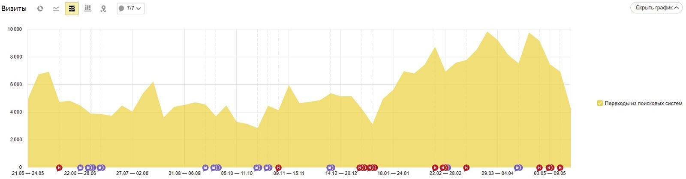

О проекте
Среди наших клиентов есть компании самой разной целевой направленности. Кому-то важно подчеркнуть свой статус, кто-то хочет выделиться среди конкурентов интерактивом и броским внешним видом сайта, для других важно перенести отлаженные бизнес-процессы в Интернет и укрепиться на рынке.
Команда NUTS Digital, знаете ли, не привыкла ставить себе рамок, лишь бы задачи были амбициозными, а клиент остался доволен итоговым результатом. Мы — как главный герой «Крепкого орешка» Джон МакКлейн, которому всё по плечу. Поэтому работа с информационным ресурсом (тем более с такой высокой посещаемостью) стала для нас интересным вызовом как в силу специфики, так и по уровню поставленных целей.
Клиент — новостной портал о бизнесе
«Деловая газета. Юг» — первое независимое издание Краснодарского края, посвящённое деловым новостям о бизнесе и для бизнеса. Задача издания — помочь предпринимателям строить бизнес, укрепить позиции на рынке и правильно оценить конкурентную среду. Еженедельный тираж печатной версии насчитывает 3000 копий, а сайт издания является лидером по посещаемости в своей нише.
С апреля 2018 года развитием сайта Деловой газеты занимается управленческая команда «РБК Краснодар». «Деловая Газета» также выступает информационным партнёром для заметных городских мероприятий, например, «ЮГАГРО», крупнейшей выставки сельскохозяйственной продукции в России, и многих других. Что является наиболее важным в работе новостного сайта? Сразу на ум приходит слово «бесперебойность», ведь новости, в отличие от мести, — блюдо, которое необходимо подавать горячим. Ещё один немаловажный аспект — масштабируемость. Сайт должен уметь справляться с наплывом посетителей в пиковые часы и выдерживать нагрузки. И, пожалуй, простота, как для читателя, который совсем не хочет заблудиться в разделах сайта, так и для авторов, зачастую работающих в крайне сжатые сроки, чтобы успеть подать свежий, актуальный материал.
Проблемы
Клиент обратился с желанием выйти на новый уровень в своей работе. Основная сложность существующей системы была связана с используемым движком сайта. Дело в том, что для работы с сайтом использовалась не самая популярная CMS, поддержка которой прекратилась некоторое время назад. Проблемы в её работе накапливались, как объявления на информационных досках.
Изучив все вводные, мы выделили следующие основные проблемы:
Непопулярная CMS без доступной поддержки со стороны разработчика. Развитие проекта стагнировало в силу ограничений движка, а в довершение всего эта работа была завязана только на одного сотрудника компании, что несло в себе риски для бизнеса в случае его ухода;
Отсутствие комментариев в коде и документации по проекту. Разобраться в хитросплетениях используемых при разработке идей без чёткой документации было сложно, а подчас и вовсе невозможно;
Отсутствие возможности гибкой настройки системы управления контентом и её масштабируемости.
Проблема с корректной обработкой страниц поисковыми системами, и отслеживанием действий пользователей.
После анализа текущего состояния сайта и краткой беседы с клиентом мы предложили не вносить ещё больше хаоса в имеющуюся CMS, и перенести сайт на совершенно новый движок, который бы избавил заказчика от привязки к конкретному разработчику, сохранил весь имеющийся функционал и позволил легко внедрять новые функции по мере необходимости. Заказчик с пониманием отнёсся к сложившейся вокруг сайта ситуации и согласился с нашими доводами. Так мы начали работу.
Что сделали?
Всю административную часть работы с сайтом переложили на крепкие плечи October CMS – систему управления контентом нового поколения, разработанную на фреймворке Laravel. Это полностью готовая админка с современным дизайном, возможностью подключения множества плагинов, гибкой самостоятельной доработки и моментального развёртывания сайта в один клик. К тому же она переведена на русский язык, проста в понимании и освоении.
Средствами October CMS можно управлять всем содержимым сайта, но это только общее описание масштабной работы, которую мы провели при переезде. Так, например, мы:
Полностью перенесли публикацию новостей и загрузку изображений в новый текстовый и медиа-редакторы, сохранив при этом функциональность старых. Изображения для статей можно обрезать при загрузке, а также сохранять их в отдельные папки.
Сохранили всю адресацию на сайте «как было», чтобы никакие статьи не потерялись.
Добавили несколько разделов под конкретные задачи сайта по запросу.
Полностью завершили переезд за три месяца. И это при полной отсутствии документации к старой админке.
Исправили ошибку с обработкой страниц сайта поисковыми стемами.
Подготовили и внедрили рекомендации по улучшению и оптимизации сайта.
Результат
Успешно перенесли всю публикацию материалов в новую систему, облегчили жизнь как авторам издания, так и руководству. Авторы получили в своё распоряжение интуитивно понятный инструмент оформления новостей и настройки размещения рекламных материалов, а руководство избавили от зависимости от конкретного разработчика благодаря современному удобному решению в управлении сайтом.
По итогам улучшения сайта, и внедрения частичной SEO-оптимизации, значительно улучшились такие показатели как:
глубина просмотра увеличилась на 1.1 страниц;
снизился показатель отказов по переходам из поисковых систем больше чем в два раза;
почти в два раза увеличилось количество посещений из поисковых систем.

Само-собой, не стоит забывать, что для любого новостного ресурса, первым и основным источником трафика, является конечно же «инфоповод», но факт остается фактом — у оптимизированного сайта больше шансов заполучить читателей :)
Сейчас мы занимаемся развитием сайта (недавно добавили новый раздел для партнёрских материалов, в работе ещё несколько задач), и обеспечиваем полную техническую поддержку проекта.
Чтобы всегда быть в курсе актуальных новостей бизнеса (и не только) переходите на сайт и добавляйте в закладки :)